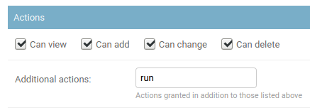

Jobs¶
Jobs are a way for users to execute custom logic on demand from within the Nautobot UI. Jobs can interact directly with Nautobot data to accomplish various data creation, modification, and validation tasks, such as:
- Automatically populate new devices and cables in preparation for a new site deployment
- Create a range of new reserved prefixes or IP addresses
- Fetch data from an external source and import it to Nautobot
- Check and report whether all top-of-rack switches have a console connection
- Check and report whether every router has a loopback interface with an assigned IP address
- Check and report whether all IP addresses have a parent prefix
...and so on. Jobs are Python code and exist outside of the official Nautobot code base, so they can be updated and changed without interfering with the core Nautobot installation. And because they're completely customizable, there's practically no limit to what a job can accomplish.
Note
Jobs unify and supersede the functionality previously provided in NetBox by "custom scripts" and "reports". Jobs are backwards-compatible for now with the Script and Report class APIs, but you are urged to move to the new Job class API described below. Jobs may be optionally marked as read-only which equates to the Report functionally, but in all cases, user input is supported via job variables.
Writing Jobs¶
Jobs may be installed in one of three ways:
- Manually installed as files in the
JOBS_ROOTpath (which defaults to$NAUTOBOT_ROOT/jobs/).- The
JOBS_ROOTdirectory must contain a file named__init__.py. Do not delete this file. - Each file created within this path is considered a separate module; there is no support for cross-file dependencies (such as a file acting as a common "library" module of functions shared between jobs) for files installed in this way.
- The
- Imported from an external Git repository.
- The repository's
jobs/directory must contain a file named__init__.py. - Each Job file in the repository is considered a separate module; there is no support for cross-file dependencies (such as a file acting as a common "library" module of functions shared between jobs) for files installed in this way.
- The repository's
- Packaged as part of a plugin.
- Jobs installed this way are part of the plugin module and can import code from elsewhere in the plugin or even have dependencies on other packages, if needed, via the standard Python packaging mechanisms.
In any case, each module holds one or more Jobs (Python classes), each of which serves a specific purpose. The logic of each job can be split into a number of distinct methods, each of which performs a discrete portion of the overall job logic.
For example, we can create a module named devices.py to hold all of our jobs which pertain to devices in Nautobot. Within that module, we might define several jobs. Each job is defined as a Python class inheriting from extras.jobs.Job, which provides the base functionality needed to accept user input and log activity.
Warning
Make sure you are not inheriting extras.jobs.models.Job instead, otherwise Django will think you want to define a new database model.
from nautobot.extras.jobs import Job
class CreateDevices(Job):
...
class DeviceConnectionsReport(Job):
...
class DeviceIPsReport(Job):
...
Each job class will implement some or all of the following components:
- Module and class attributes, providing for default behavior, documentation and discoverability
- a set of variables for user input via the Nautobot UI (if your job requires any user inputs)
- a
run()method, which is executed first and receives the user input values, if any - any number of
test_*()methods, which will be invoked next in order of declaration. Log messages generated by the job will be grouped together by the test method they were invoked from. - a
post_run()method, which is executed last and can be used to handle any necessary cleanup or final events (such as sending an email or triggering a webhook). The status of the overall job is available at this time asself.failedand theJobResultdata object is available asself.result.
You can implement the entire job within the run() function, but for more complex jobs, you may want to provide more granularity in the output and logging of activity. For this purpose, you can implement portions of the logic as test_*() methods (i.e., methods whose name begins with test_*) and/or a post_run() method. Log messages generated by the job logging APIs (more below on this topic) will be grouped together according to their base method (run, test_a, test_b, ..., post_run) which can aid in understanding the operation of the job.
Note
Your job can of course define additional Python methods to compartmentalize and reuse logic as required; however the run, test_*, and post_run methods are the only ones that will be automatically invoked by Nautobot.
It's important to understand that jobs execute on the server asynchronously as background tasks; they log messages and report their status to the database by updating JobResult records and creating JobLogEntry records.
Note
When actively developing a Job utilizing a development environment it's important to understand that the "automatically reload when code changes are detected" debugging functionality provided by nautobot-server runserver does not automatically restart the Celery worker process when code changes are made; therefore, it is required to restart the worker after each update to your Job source code or else it will continue to run the version of the Job code that was present when it first started.
Additionally, as of Nautobot 1.3, the Job database records corresponding to installed Jobs are not automatically refreshed when the development server auto-restarts. If you make changes to any of the class and module metadata attributes described in the following sections, the database will be refreshed to reflect these changes only after running nautobot-server migrate or nautobot-server post_upgrade (recommended) or if you manually edit a Job database record to force it to be refreshed.
Module Metadata Attributes¶
name (Grouping)¶
You can define a global constant called name within a job module (the Python file which contains one or more job classes) to set the default grouping under which jobs in this module will be displayed in the Nautobot UI. If this value is not defined, the module's file name will be used. This "grouping" value may also be defined or overridden when editing Job records in the database.
Note
In some UI elements and API endpoints, the module file name is displayed in addition to or in place of this attribute, so even if defining this attribute, you should still choose an appropriately explanatory file name as well.
Class Metadata Attributes¶
Job-specific attributes may be defined under a class named Meta within each job class you implement. All of these are optional, but encouraged.
name¶
This is the human-friendly name of your job, as will be displayed in the Nautobot UI. If not set, the class name will be used.
Note
In some UI elements and API endpoints, the class name is displayed in addition to or in place of this attribute, so even if defining this attribute, you should still choose an appropriately explanatory class name as well.
description¶
An optional human-friendly description of what this job does. This can accept either plain text or Markdown-formatted text. It can also be multiple lines:
class ExampleJob(Job):
class Meta:
description = """
This job does a number of interesting things.
1. It hacks the Gibson
2. It immanentizes the eschaton
3. It's a floor wax *and* a dessert topping
"""
If you code a multi-line description, the first line only will be used in the description column of the jobs list, while the full description will be rendered in the job detail view, submission, approval, and results pages.
approval_required¶
Default: False
A boolean that will mark this job as requiring approval from another user to be run. For more details on approvals, please refer to the section on scheduling and approvals.
commit_default¶
Default: True
The checkbox to commit database changes when executing a job is checked by default in the Nautobot UI. You can set commit_default to False under the Meta class if you want this option to instead be unchecked by default.
field_order¶
Default: []
A list of strings (field names) representing the order your job variables should be rendered as form fields in the job submission UI. If not defined, the variables will be listed in order of their definition in the code. If variables are defined on a parent class and no field order is defined, the parent class variables will appear before the subclass variables.
has_sensitive_variables¶
Added in version 1.3.10
Default: True
Unless set to False, it prevents the job's input parameters from being saved to the database. This defaults to True so as to protect against inadvertent database exposure of input parameters that may include sensitive data such as passwords or other user credentials. Review whether each job's inputs contain any such variables before setting this to False; if a job does contain sensitive inputs, if possible you should consider whether the job could be re-implemented using Nautobot's Secrets feature as a way to ensure that the sensitive data is not directly provided as a job variable at all.
Important notes about jobs with sensitive variables:
- Such jobs cannot be scheduled to run in the future or on a recurring schedule (as scheduled jobs must by necessity store their variables in the database for future reference).
- Jobs with sensitive variables cannot be marked as requiring approval (as jobs pending approval must store their variables in the database until approved).
hidden¶
Default: False
A Boolean that if set to True prevents the job from being displayed by default in the list of Jobs in the Nautobot UI.
Since the jobs execution framework is designed to be generic, there may be several technical jobs defined by users which interact with or are invoked by external systems. In such cases, these jobs are not meant to be executed by a human and likely do not make sense to expose to end users for execution, and thus having them exposed in the UI at all is extraneous.
Important notes about hidden jobs:
- This is merely hiding them by default from the web interface. It is NOT a security feature.
- In the Jobs list view it is possible to filter to "Hidden: (no selection)" or even "Hidden: Yes" to list the hidden jobs.
- All Job UI and REST API endpoints still exist for hidden jobs and can be accessed by any user who is aware of their existence.
- Hidden jobs can still be executed through the UI or the REST API given the appropriate URL.
- Results for hidden jobs will still appear in the Job Results list after they are run.
read_only¶
Added in version 1.1.0
Default: False
A boolean that designates whether the job is able to make changes to data in the database. The value defaults to False but when set to True, any data modifications executed from the job's code will be automatically aborted at the end of the job. The job input form is also modified to remove the commit checkbox as it is irrelevant for read-only jobs. When a job is marked as read-only, log messages that are normally automatically emitted about the DB transaction state are not included because no changes to data are allowed. Note that user input may still be optionally collected with read-only jobs via job variables, as described below.
soft_time_limit¶
Added in version 1.3.0
An int or float value, in seconds, which can be used to override the default soft time limit for a job task to complete.
The celery.exceptions.SoftTimeLimitExceeded exception will be raised when this soft time limit is exceeded. The job task can catch this to clean up before the hard time limit (10 minutes by default) is reached:
from celery.exceptions import SoftTimeLimitExceeded
from nautobot.extras.jobs import Job
class ExampleJobWithSoftTimeLimit(Job):
class Meta:
name = "Soft Time Limit"
description = "Set a soft time limit of 10 seconds`"
soft_time_limit = 10
def run(self, data, commit):
try:
# code which might take longer than 10 seconds to run
job_code()
except SoftTimeLimitExceeded:
# any clean up code
cleanup_in_a_hurry()
template_name¶
Added in version 1.4.0
A path relative to the job source code containing a Django template which provides additional code to customize the Job's submission form. This template should extend the existing job template, extras/job.html, otherwise the base form and functionality may not be available.
A template can provide additional JavaScript, CSS, or even display HTML. A good starting template would be:
{% extends 'extras/job.html' %}
{% block extra_styles %}
{{ block.super }}
<!-- Add additional CSS here. -->
{% endblock %}
{% block content %}
{{ block.super }}
<!-- Add additional HTML here. -->
{% endblock content %}
{% block javascript %}
{{ block.super }}
<!-- Add additional JavaScript here. -->
{% endblock javascript %}
For another example checkout the template used in example plugin in the GitHub repo.
time_limit¶
Added in version 1.3.0
An int or float value, in seconds, which can be used to override the default hard time limit (10 minutes by default) for a job task to complete.
Unlike the soft_time_limit above, no exceptions are raised when a time_limit is exceeded. The task will just terminate silently:
from nautobot.extras.jobs import Job
class ExampleJobWithHardTimeLimit(Job):
class Meta:
name = "Hard Time Limit"
description = "Set a hard time limit of 10 seconds`"
time_limit = 10
def run(self, data, commit):
# code which might take longer than 10 seconds to run
# this code will fail silently if the time_limit is exceeded
job_code()
Note
If the time_limit is set to a value less than or equal to the soft_time_limit, a warning log is generated to inform the user that this job will fail silently after the time_limit as the soft_time_limit will never be reached.
Variables¶
Variables allow your job to accept user input via the Nautobot UI, but they are optional; if your job does not require any user input, there is no need to define any variables. Conversely, if you are making use of user input in your job, you must also implement the run() method, as it is the only entry point to your job that has visibility into the variable values provided by the user.
from nautobot.extras.jobs import Job, StringVar, IntegerVar, ObjectVar
class CreateDevices(Job):
var1 = StringVar(...)
var2 = IntegerVar(...)
var3 = ObjectVar(...)
def run(self, data, commit):
...
The remainder of this section documents the various supported variable types and how to make use of them.
Default Variable Options¶
All job variables support the following default options:
default- The field's default valuedescription- A brief user-friendly description of the fieldlabel- The field name to be displayed in the rendered formrequired- Indicates whether the field is mandatory (all fields are required by default)widget- The class of form widget to use (see the Django documentation)
StringVar¶
Stores a string of characters (i.e. text). Options include:
min_length- Minimum number of charactersmax_length- Maximum number of charactersregex- A regular expression against which the provided value must match
Note that min_length and max_length can be set to the same number to effect a fixed-length field.
TextVar¶
Arbitrary text of any length. Renders as a multi-line text input field.
IntegerVar¶
Stores a numeric integer. Options include:
min_value- Minimum valuemax_value- Maximum value
BooleanVar¶
A true/false flag. This field has no options beyond the defaults listed above.
ChoiceVar¶
A set of choices from which the user can select one.
choices- A list of(value, label)tuples representing the available choices. For example:
CHOICES = (
('n', 'North'),
('s', 'South'),
('e', 'East'),
('w', 'West')
)
direction = ChoiceVar(choices=CHOICES)
In the example above, selecting the choice labeled "North" will submit the value n.
MultiChoiceVar¶
Similar to ChoiceVar, but allows for the selection of multiple choices.
ObjectVar¶
A particular object within Nautobot. Each ObjectVar must specify a particular model, and allows the user to select one of the available instances. ObjectVar accepts several arguments, listed below.
model- The model classdisplay_field- The name of the REST API object field to display in the selection list (default:'display')query_params- A dictionary of REST API query parameters to use when retrieving available options (optional)null_option- A label representing a "null" or empty choice (optional)
The display_field argument is useful in cases where using the display API field is not desired for referencing the object. For example, when displaying a list of IP Addresses, you might want to use the dns_name field:
To limit the selections available within the list, additional query parameters can be passed as the query_params dictionary. For example, to show only devices with an "active" status:
Multiple values can be specified by assigning a list to the dictionary key. It is also possible to reference the value of other fields in the form by prepending a dollar sign ($) to the variable's name. The keys you can use in this dictionary are the same ones that are available in the REST API - as an example it is also possible to filter the Site ObjectVar for its tenant_group_id.
region = ObjectVar(
model=Region
)
tenant_group = ObjectVar(
model=TenantGroup
)
site = ObjectVar(
model=Site,
query_params={
'region_id': '$region',
'tenant_group_id': '$tenant_group'
}
)
MultiObjectVar¶
Similar to ObjectVar, but allows for the selection of multiple objects.
FileVar¶
An uploaded file. Note that uploaded files are present in memory only for the duration of the job's execution: They will not be automatically saved for future use. The job is responsible for writing file contents to disk where necessary.
IPAddressVar¶
An IPv4 or IPv6 address, without a mask. Returns a netaddr.IPAddress object.
IPAddressWithMaskVar¶
An IPv4 or IPv6 address with a mask. Returns a netaddr.IPNetwork object which includes the mask.
IPNetworkVar¶
An IPv4 or IPv6 network with a mask. Returns a netaddr.IPNetwork object. Two attributes are available to validate the provided mask:
min_prefix_length- Minimum length of the maskmax_prefix_length- Maximum length of the mask
The run() Method¶
The run() method, if you choose to implement it, should accept two arguments:
data- A dictionary which will contain all of the variable data passed in by the user (via the web UI or REST API)commit- A boolean indicating whether database changes should be committed. If this isFalse, even if your Job attempts to make database changes, they will be automatically rolled back when the Job completes.
from nautobot.extras.jobs import Job, StringVar, IntegerVar, ObjectVar
class CreateDevices(Job):
var1 = StringVar(...)
var2 = IntegerVar(...)
var3 = ObjectVar(...)
def run(self, data, commit):
...
Again, defining user variables is totally optional; you may create a job with just a run() method if no user input is needed, in which case data will be an empty dictionary.
Note
The test_*() and post_run() methods do not accept any arguments; if you need to access user data or the commit flag, your run() method is responsible for storing these values in the job instance, such as:
Warning
When writing Jobs that create and manipulate data it is recommended to make use of the validated_save() convenience method which exists on all core models. This method saves the instance data but first enforces model validation logic. Simply calling save() on the model instance does not enforce validation automatically and may lead to bad data. See the development best practices.
Warning
The Django ORM provides methods to create/edit many objects at once, namely bulk_create() and update(). These are best avoided in most cases as they bypass a model's built-in validation and can easily lead to database corruption if not used carefully.
The test_*() Methods¶
If your job class defines any number of methods whose names begin with test_, these will be automatically invoked after the run() method (if any) completes. These methods must take no arguments (other than self).
Log messages generated by any of these methods will be automatically grouped together by the test method they were invoked from, which can be helpful for readability.
The post_run() Method¶
If your job class implements a post_run() method (which must take no arguments other than self), this method will be automatically invoked after the run() and test_*() methods (if any). It will be called even if one of the other methods raises an exception, so this method can be used to handle any necessary cleanup or final events (such as sending an email or triggering a webhook). The status of the overall job is available at this time as self.failed and the associated JobResult data field is available as self.results.
Logging¶
The following instance methods are available to log results from an executing job to be stored into JobLogEntry records associated with the current JobResult:
self.log(message)self.log_debug(message)self.log_success(obj=None, message=None)self.log_info(obj=None, message=None)self.log_warning(obj=None, message=None)self.log_failure(obj=None, message=None)
Messages recorded with log() or log_debug() will appear in a job's results but are never associated with a particular object; the other log_* functions may be invoked with or without a provided object to associate the message with.
It is advised to log a message for each object that is evaluated so that the results will reflect how many objects are being manipulated or reported on.
Markdown rendering is supported for log messages.
Changed in version 1.3.4
As a security measure, the message passed to any of these methods will be passed through the nautobot.utilities.logging.sanitize() function in an attempt to strip out information such as usernames/passwords that should not be saved to the logs. This is of course best-effort only, and Job authors should take pains to ensure that such information is not passed to the logging APIs in the first place. The set of redaction rules used by the sanitize() function can be configured as settings.SANITIZER_PATTERNS.
Note
Using self.log_failure(), in addition to recording a log message, will flag the overall job as failed, but it will not stop the execution of the job, nor will it result in an automatic rollback of any database changes made by the job. To end a job early, you can use a Python raise or return as appropriate. Raising nautobot.utilities.exceptions.AbortTransaction will ensure that any database changes are rolled back as part of the process of ending the job.
Accessing Request Data¶
Details of the current HTTP request (the one being made to execute the job) are available as the instance attribute self.request. This can be used to infer, for example, the user executing the job and their client IP address:
username = self.request.user.username
ip_address = self.request.META.get('HTTP_X_FORWARDED_FOR') or \
self.request.META.get('REMOTE_ADDR')
self.log_info(f"Running as user {username} (IP: {ip_address})...")
For a complete list of available request parameters, please see the Django documentation.
Reading Data from Files¶
The Job class provides two convenience methods for reading data from files:
load_yamlload_json
These two methods will load data in YAML or JSON format, respectively, from files within the local path (i.e. JOBS_ROOT/).
Managing Jobs¶
As of Nautobot 1.3, each Job class installed in Nautobot is represented by a corresponding Job data record in the Nautobot database. These data records are refreshed when the nautobot-server migrate or nautobot-server post_upgrade command is run, or (for Jobs from a Git repository) when a Git repository is enabled or re-synced in Nautobot. These data records make it possible for an administrative user (or other user with appropriate access privileges) to exert a level of administrative control over the Jobs created and updated by Job authors.
Enabling Jobs for Running¶
When a new Job record is created for a newly discovered Job class, it defaults to enabled = False, which prevents the Job from being run by any user. This is intended to provide a level of security and oversight regarding the installation of new Jobs into Nautobot.
Important
One exception to this default is when upgrading from a Nautobot release before 1.3 to Nautobot 1.3.0 or later. In this case, at the time of the upgrade, any Job class that shows evidence of having been run or scheduled under the older Nautobot version (that is, there is at least one JobResult and/or ScheduledJob record that references this Job class) will result in the creation of a Job database record with enabled = True. The reasoning for this feature is the assertion that because the Job has been run or scheduled previously, it has presumably already undergone appropriate review at that time, and so it should remain possible to run it as it was possible before the upgrade.
An administrator or user with extras.change_job permission can edit the Job to change it to enabled = True, permitting running of the Job, when they have completed any appropriate review of the new Job to ensure that it meets their standards. Similarly, an obsolete or no-longer-used Job can be prevented from inadvertent execution by changing it back to enabled = False.
Overriding Metadata¶
An administrator or user with extras.change_job permission can also edit a Job database record to optionally override any or all of the following metadata attributes defined by the Job module or class:
groupingnamedescriptionapproval_requiredcommit_defaulthiddenread_onlysoft_time_limittime_limit
This is done by setting the corresponding "override" flag (grouping_override, name_override, etc.) to True then providing a new value for the attribute in question. An overridden attribute will remain set to its overridden value even if the underlying Job class definition changes and nautobot-server <migrate|post_upgrade> gets run again. Conversely, clearing the "override" flag for an attribute and saving the database record will revert the attribute to the underlying value defined within the Job class source code.
Deleting Jobs¶
When a previously installed Job class is removed, after running nautobot-server <migrate|post_upgrade> or refreshing the providing Git repository, the Job database record will not be automatically deleted, but will be flagged as installed = False and can no longer be run or scheduled.
An administrator or user with extras.delete_job permissions may delete such a Job database record if desired, but be aware that doing so will result in any existing JobResult or ScheduledJob records that originated from this Job losing their association to the Job; this association will not be automatically restored even if the Job is later reinstalled or reintroduced.
Running Jobs¶
Note
To run any job, a user must be assigned the extras.run_job permission. This is achieved by assigning the user (or group) a permission on the extras > job object and specifying the run action in the admin UI as shown below.
Similarly, to approve a job request by another user, a user must be assigned the extras.approve_job permission via the same process. Job approvers also need the extras.change_scheduledjob and/or extras.delete_scheduledjob permissions as job approvals are implemented via the ScheduledJob data model.

Jobs and class_path¶
It is a key concept to understand the 3 class_path elements:
grouping_name: which can be one oflocal,git, orplugins- depending on where theJobhas been defined.module_name: which is the Python path to the job definition file, for a plugin-provided job, this might be something likemy_plugin_name.jobs.my_job_filenameornautobot_golden_config.jobsand is the importable Python path name (which would not include the.pyextension, as per Python syntax standards).JobClassName: which is the name of the class inheriting fromnautobot.extras.jobs.Jobcontained in the above file.
The class_path is often represented as a string in the format of <grouping_name>/<module_name>/<JobClassName>, such as
local/example/MyJobWithNoVars or plugins/nautobot_golden_config.jobs/BackupJob. Understanding the definitions of these
elements will be important in running jobs programmatically.
Changed in version 1.3.0
With the addition of Job database models, it is now generally possible and preferable to refer to a job by its UUID primary key, similar to other Nautobot database models, rather than its class_path.
Via the Web UI¶
Jobs can be run via the web UI by navigating to the job, completing any required form data (if any), and clicking the "Run Job" button.
Once a job has been run, the latest JobResult for that job will be summarized in the job list view.
Via the API¶
To run a job via the REST API, issue a POST request to the job's endpoint /api/extras/jobs/<uuid>/run/. You can optionally provide JSON data to set the commit flag, specify any required user input data, and/or provide optional scheduling information as described in the section on scheduling and approvals.
For example, to run a job with no user inputs and without committing any anything to the database:
curl -X POST \
-H "Authorization: Token $TOKEN" \
-H "Content-Type: application/json" \
-H "Accept: application/json; version=1.3; indent=4" \
http://nautobot/api/extras/jobs/$JOB_ID/run/
Or to run a job that expects user inputs, and commit changes to the database:
curl -X POST \
-H "Authorization: Token $TOKEN" \
-H "Content-Type: application/json" \
-H "Accept: application/json; version=1.3; indent=4" \
http://nautobot/api/extras/jobs/$JOB_ID/run/ \
--data '{"data": {"string_variable": "somevalue", "integer_variable": 123}, "commit": true}'
When providing input data, it is possible to specify complex values contained in ObjectVars, MultiObjectVars, and IPAddressVars.
ObjectVars can be specified by either using their primary key directly as the value, or as a dictionary containing a more complicated query that gets passed into the Django ORM as keyword arguments.MultiObjectVars can be specified as a list of primary keys.IPAddressVars can be provided as strings in CIDR notation.
Via the CLI¶
Jobs can be run from the CLI by invoking the management command:
Note
See above for class_path definitions.
Added in version 1.3.10
The --data and --local parameters were added.
The --data parameter must be a JSON string, e.g. --data='{"string_variable": "somevalue", "integer_variable": 123}'
Using the same example shown in the API:
Warning
The --username <username> parameter can be used to specify the user that will be identified as the requester of the job. It is optional if the job will not be modifying the database, but is mandatory if you are running with --commit, as the specified user will own any resulting database changes.
Note that nautobot-server commands, like all management commands and other direct interactions with the Django database, are not gated by the usual Nautobot user authentication flow. It is possible to specify any existing --username with the nautobot-server runjob command in order to impersonate any defined user in Nautobot. Use this power wisely and be cautious who you allow to access it.
Testing Jobs¶
Jobs are Python code and can be tested as such, usually via Django unit-test features. That said, there are a few useful tricks specific to testing Jobs.
While individual methods within your Job can and should be tested in isolation, you'll likely also want to test the entire execution of the Job. Nautobot 1.3.3 introduced a few enhancements to make this simpler to do, but it's also quite possible to test in earlier releases with a bit more effort.
Nautobot 1.3.3 and later¶
The simplest way to test the entire execution of Jobs from 1.3.3 on is via calling the nautobot.utilities.testing.run_job_for_testing() method, which is a helper wrapper around the run_job function used to execute a Job via Nautobot's Celery worker process.
Because of the way run_job_for_testing and more specifically run_job() works, which is somewhat complex behind the scenes, you need to inherit from nautobot.utilities.testing.TransactionTestCase instead of django.test.TestCase (Refer to the Django documentation if you're interested in the differences between these classes - TransactionTestCase from Nautobot is a small wrapper around Django's TransactionTestCase).
When using TransactionTestCase (whether from Django or from Nautobot) each tests runs on a completely empty database. Furthermore, Nautobot requires new jobs to be enabled before they can run. Therefore, we need to make sure the job is enabled before each run which run_job_for_testing handles for us.
A simple example of a Job test case for 1.3.3 and forward might look like the following:
from nautobot.extras.models import Job, JobLogEntry
from nautobot.utilities.testing import run_job_for_testing, TransactionTestCase
class MyJobTestCase(TransactionTestCase):
def test_my_job(self):
# Testing of Job "MyJob" in file "my_job_file.py" in $JOBS_ROOT
job = Job.objects.get(job_class_name="MyJob", module_name="my_job_file", source="local")
# or, job = Job.objects.get_for_class_path("local/my_job_file/MyJob")
job_result = run_job_for_testing(job, data={}, commit=False)
# Since we ran with commit=False, any database changes made by the job won't persist,
# but we can still inspect the logs created by running the job
log_entries = JobLogEntry.objects.filter(job_result=job_result)
for log_entry in log_entries:
self.assertEqual(log_entry.message, "...")
Tip
For more advanced examples (such as testing jobs executed with commit=True, for example) refer to the Nautobot source code, specifically nautobot/extras/tests/test_jobs.py.
Nautobot 1.3.2 and earlier (including 1.2)¶
If your test case needs to be backwards-compatible with test execution against Nautobot 1.3.2 and/or earlier, you need to handle a couple more things manually:
Set up the "job_logs" database correctly for testing:
from django.conf import settings
if "job_logs" in settings.DATABASES:
settings.DATABASES["job_logs"] = settings.DATABASES["job_logs"].copy()
settings.DATABASES["job_logs"]["TEST"] = {"MIRROR": "default"}
Replicate the behavior of run_job_for_testing manually so that your test execution most closely resembles the way the celery worker would run the test:
import uuid
from django.contrib.auth import get_user_model
from django.contrib.contenttypes.models import ContentType
from nautobot.extras.context_managers import web_request_context
from nautobot.extras.jobs import run_job
from nautobot.extras.models import JobResult, Job
def run_job_for_testing(job, data=None, commit=True, username="test-user"):
if data is None:
data = {}
user_model = get_user_model()
user, _ = user_model.objects.get_or_create(username=username, is_superuser=True, password="password")
job_result = JobResult.objects.create(
name=job.class_path,
obj_type=ContentType.objects.get_for_model(Job),
user=user,
job_id=uuid.uuid4(),
)
with web_request_context(user=user) as request:
run_job(data=data, request=request, commit=commit, job_result_pk=job_result.pk)
return job_result
Setup the databases field on the test class correctly, and re-create the default Statuses on setUp in your test classes, because django.test.TransactionTestCase truncates them on every tearDown:
from django.apps import apps
from django.conf import settings
from django.test import TransactionTestCase
from nautobot.extras.management import populate_status_choices
class MyJobTestCase(TransactionTestCase):
# 'job_logs' is a proxy connection to the same (default) database that's used exclusively for Job logging
if "job_logs" in settings.DATABASES:
databases = ("default", "job_logs")
def setUp(self):
super().setUp()
populate_status_choices(apps, None)
Example Jobs¶
Creating objects for a planned site¶
This job prompts the user for three variables:
- The name of the new site
- The device model (a filtered list of defined device types)
- The number of access switches to create
These variables are presented as a web form to be completed by the user. Once submitted, the job's run() method is called to create the appropriate objects, and it returns simple CSV output to the user summarizing the created objects.
from django.utils.text import slugify
from nautobot.dcim.models import Device, DeviceRole, DeviceType, Manufacturer, Site
from nautobot.extras.models import Status
from nautobot.extras.jobs import *
class NewBranch(Job):
class Meta:
name = "New Branch"
description = "Provision a new branch site"
field_order = ['site_name', 'switch_count', 'switch_model']
site_name = StringVar(
description="Name of the new site"
)
switch_count = IntegerVar(
description="Number of access switches to create"
)
manufacturer = ObjectVar(
model=Manufacturer,
required=False
)
switch_model = ObjectVar(
description="Access switch model",
model=DeviceType,
query_params={
'manufacturer_id': '$manufacturer'
}
)
def run(self, data, commit):
STATUS_PLANNED = Status.objects.get(slug='planned')
# Create the new site
site = Site(
name=data['site_name'],
slug=slugify(data['site_name']),
status=STATUS_PLANNED,
)
site.validated_save()
self.log_success(obj=site, message="Created new site")
# Create access switches
switch_role = DeviceRole.objects.get(name='Access Switch')
for i in range(1, data['switch_count'] + 1):
switch = Device(
device_type=data['switch_model'],
name=f'{site.slug}-switch{i}',
site=site,
status=STATUS_PLANNED,
device_role=switch_role
)
switch.validated_save()
self.log_success(obj=switch, message="Created new switch")
# Generate a CSV table of new devices
output = [
'name,make,model'
]
for switch in Device.objects.filter(site=site):
attrs = [
switch.name,
switch.device_type.manufacturer.name,
switch.device_type.model
]
output.append(','.join(attrs))
return '\n'.join(output)
Device validation¶
A job to perform various validation of Device data in Nautobot. As this job does not require any user input, it does not define any variables, nor does it implement a run() method.
from nautobot.dcim.models import ConsolePort, Device, PowerPort
from nautobot.extras.models import Status
from nautobot.extras.jobs import Job
class DeviceConnectionsReport(Job):
description = "Validate the minimum physical connections for each device"
def test_console_connection(self):
STATUS_ACTIVE = Status.objects.get(slug='active')
# Check that every console port for every active device has a connection defined.
for console_port in ConsolePort.objects.prefetch_related('device').filter(device__status=STATUS_ACTIVE):
if console_port.connected_endpoint is None:
self.log_failure(
obj=console_port.device,
message="No console connection defined for {}".format(console_port.name)
)
elif not console_port.connection_status:
self.log_warning(
obj=console_port.device,
message="Console connection for {} marked as planned".format(console_port.name)
)
else:
self.log_success(obj=console_port.device)
def test_power_connections(self):
STATUS_ACTIVE = Status.objects.get(slug='active')
# Check that every active device has at least two connected power supplies.
for device in Device.objects.filter(status=STATUS_ACTIVE):
connected_ports = 0
for power_port in PowerPort.objects.filter(device=device):
if power_port.connected_endpoint is not None:
connected_ports += 1
if not power_port.connection_status:
self.log_warning(
obj=device,
message="Power connection for {} marked as planned".format(power_port.name)
)
if connected_ports < 2:
self.log_failure(
obj=device,
message="{} connected power supplies found (2 needed)".format(connected_ports)
)
else:
self.log_success(obj=device)